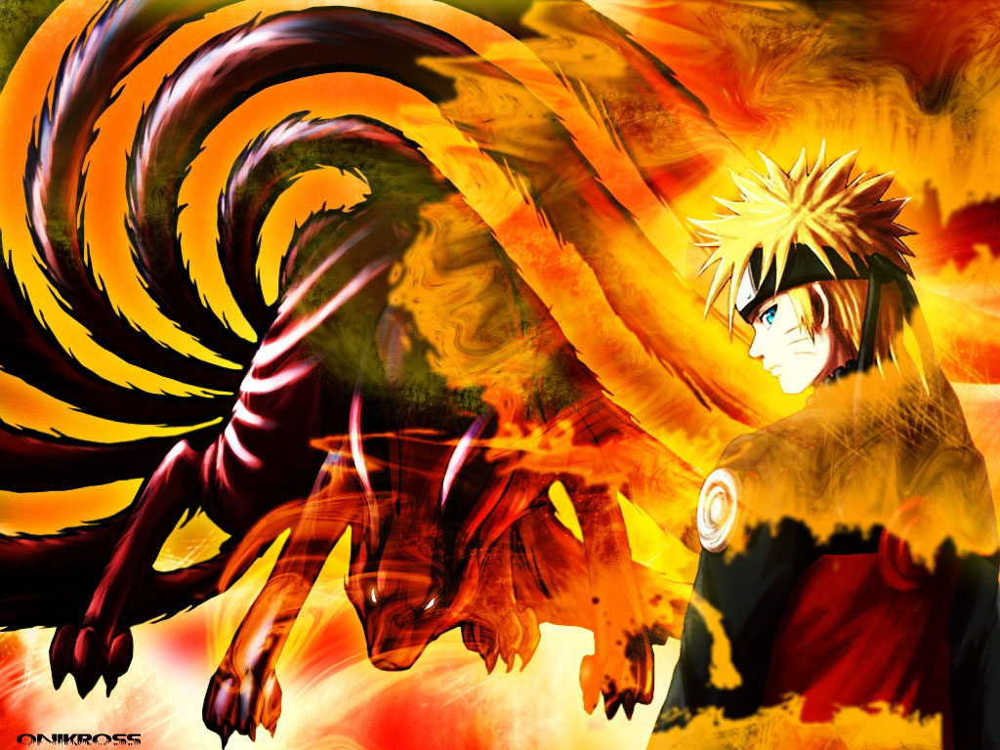

-
Alternative Names: NARUTO; Naruto Shippuden
Author(s): Kishimoto Masashi
Genres: Action, Adventure, Comedy, Drama, Fantasy, Martial Arts, Shounen
Release: 1999
Status: Current
Type: Manga
Length: 60 Volumes 608 Chapters
Read Online @:

More Info @:

Notes
Naruto is a rambunctious kid, Naruto constantly looks for recognition and dreams to be the Hokage, the ninja who is acknowledged as the leader and strongest of them all. But at the moment he is known as the class prankster and is feared or avoided because of something that happened 12 years before the start of this story. He has a powerful creature known as the Nine-taled Demon fox, the Kyuubi, sealed within him... but Naruto doesn't know that. How will he be recognized and accepted? Read it!